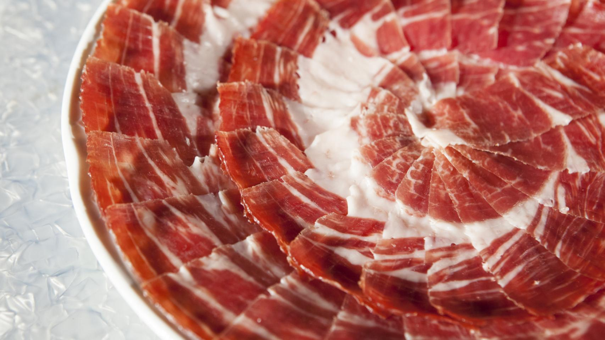

Aprende la historia y el arte del corte del jamón

Inicio
Secciones
Historia del producto
Crianza
Curación del jamón ibérico
Acceder a los distintos cortes
Primer corte
Segundo corte
Tercer corte
Denominaciones de origen
Denominación de origen Dehesa de Extremadura
Denominación de origen Guijuelo
Denominación de origen Jabugo
Denominación de origen Los Pedroches
Denominación de origen Teruel